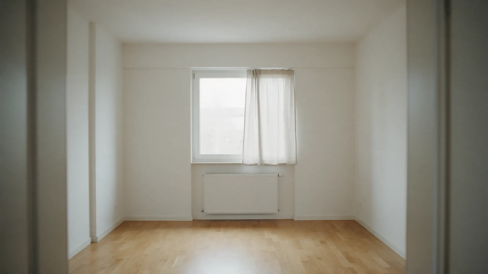
Ремонт квартир в Казани – смета не растёт после подписания
Работаем по графику: план по неделям, фотоотчёт каждые 7 дней, оплата по этапам после приёмки.
Пришлите план квартиры – вернёмся со сметой и графиком.
Прораб пропал на третьей неделе
Телефон не отвечает, рабочие приходят через день. Что сделано и что дальше, непонятно. Приходится ездить самому и разбираться на месте.
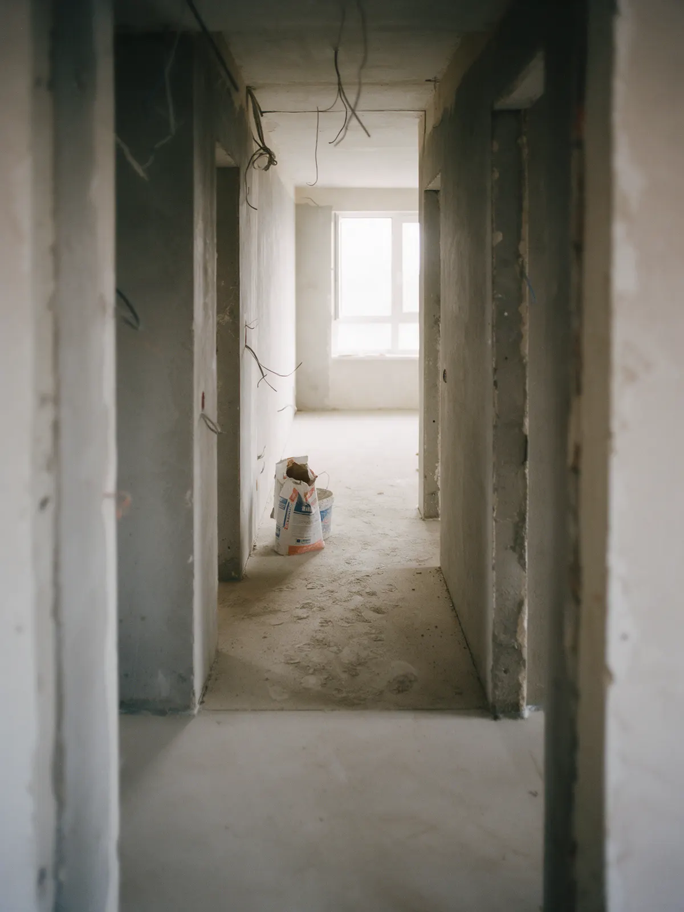
График по неделям и фотоотчёт каждые 7 дней
Перед стартом вы получаете план работ по неделям. Раз в 7 дней приходят фото с площадки и короткий отчёт: что сделано, что дальше. Приезжать не нужно, но всегда можно.
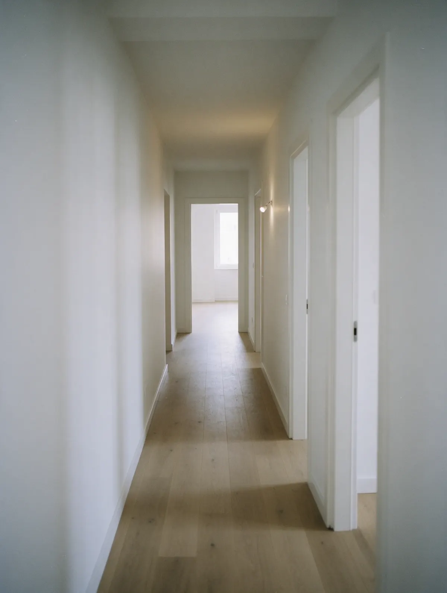
Смета выросла вдвое
Сначала «примерно», потом «выяснилось», потом «доплатите за вывоз мусора». Итоговая цифра не похожа на ту, с которой всё начиналось.
Смета в договоре, оплата по этапам
Считаем по плану и после осмотра квартиры, сумму фиксируем в договоре. Четыре этапа, каждый принимаете вы: оплата только после приёмки этапа.
1Демонтаж и черновые
Стяжка, штукатурка, разводка электрики и воды
2Инженерия
Щит, розетки, сантехника, тёплый пол
3Чистовая отделка
Плитка, покраска, полы, двери, плинтусы
4Уборка и сдача
Акт приёмки, гарантия 2 года на работы
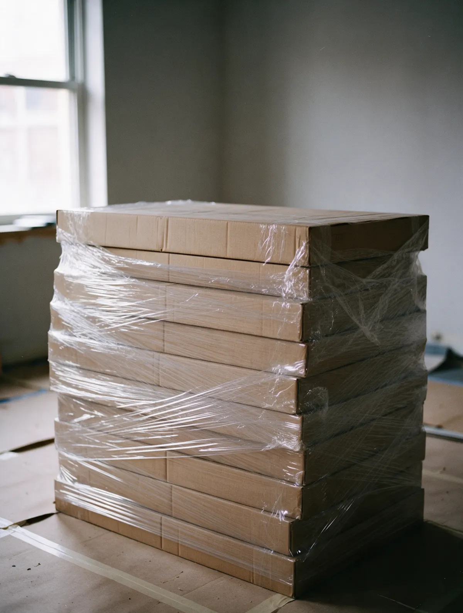
Грязь в квартире и в подъезде
Пыль оседает на всём, мешки стоят на лестничной клетке, и соседи звонят вам, а не бригаде.
Пыль по всей квартире
Без плёнки и пылесоса на инструменте
Мешки на лестнице
Мусор копится до «как-нибудь вывезем»
Звонки от соседей
Разбираться приходится вам
Уборка после каждого этапа
Полы и подъезд закрываем плёнкой, мусор вывозим сами по мере накопления. В конце каждого этапа площадку убираем. Ключи возвращаем в чистую квартиру.
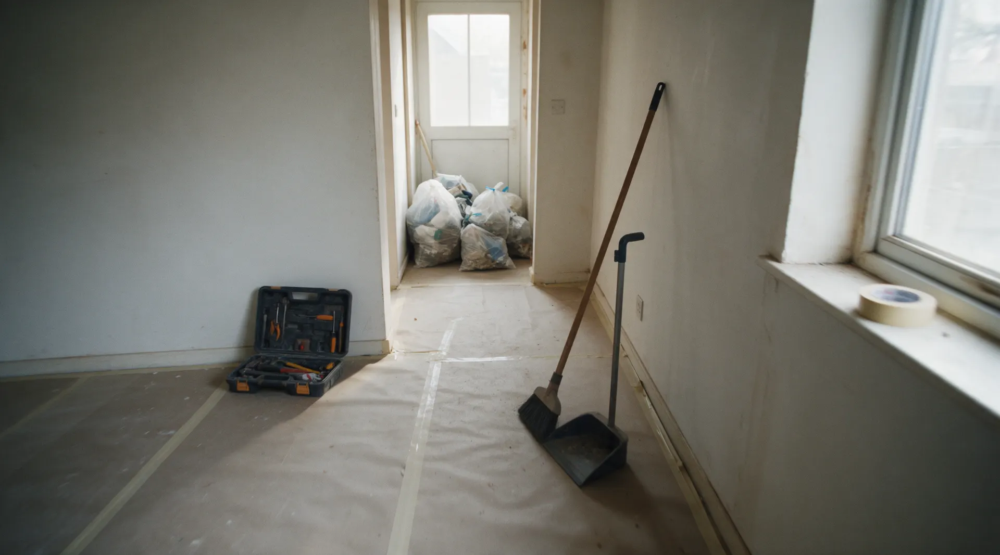
Обещания на словах
Красивый сайт, фото из интернета, «довольные клиенты» без имён и бригада без юрлица. Проверить нечего, остаётся верить.
Чужие фото
Портфолио, которого не было
Отзывы без имён
Написаны самим подрядчиком
Ни договора, ни ИНН
Спросить не с кого
Что пишут на Яндекс.Картах
-
«Каждую неделю приходил фотоотчёт, я из другого города видела, что сделано. Смета в итоге совпала с договором до рубля.»
-
«Приятно удивила уборка: после каждого этапа в подъезде чисто, соседи не жаловались. Сдали на неделю раньше графика.»
-
«Платили по этапам после приёмки, это спокойно. Одну стену пришлось переделать, сделали без споров.»
Объекты до и после
-
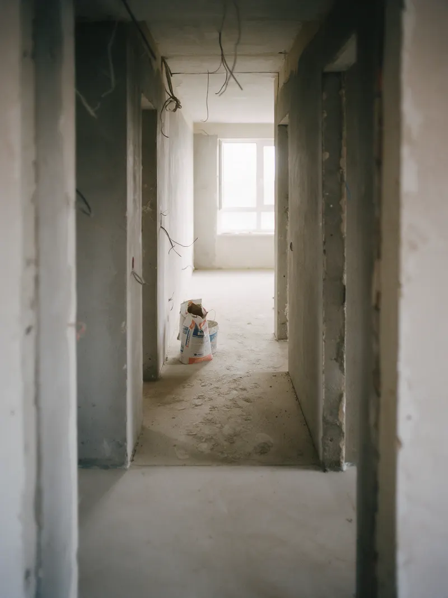
До 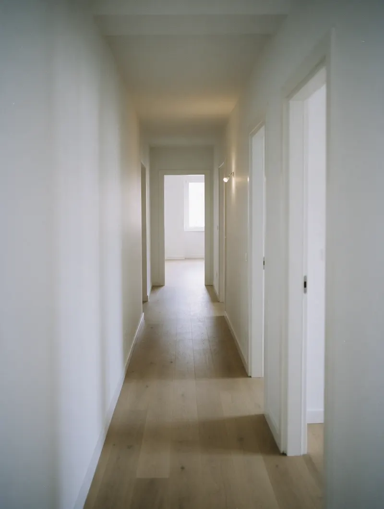
После -
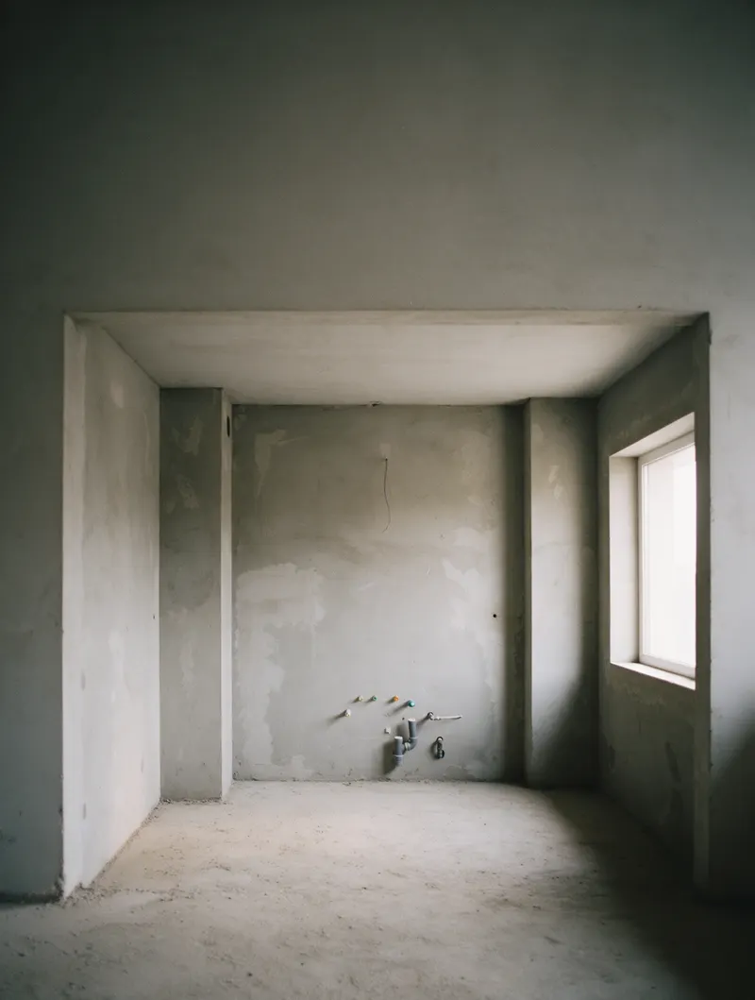
До 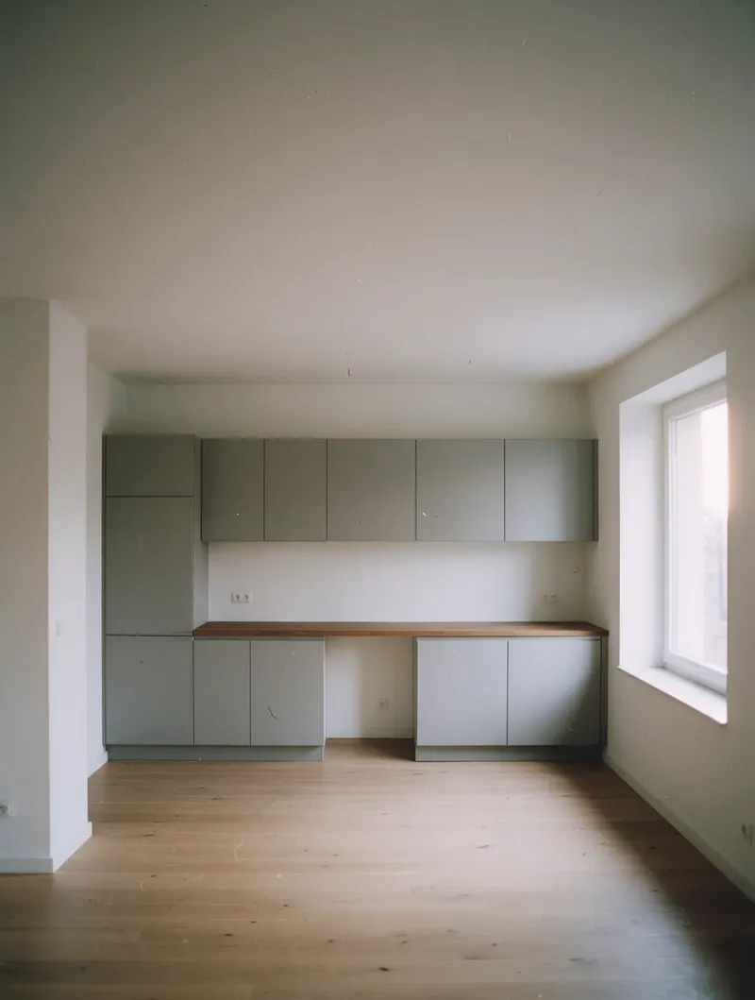
После -
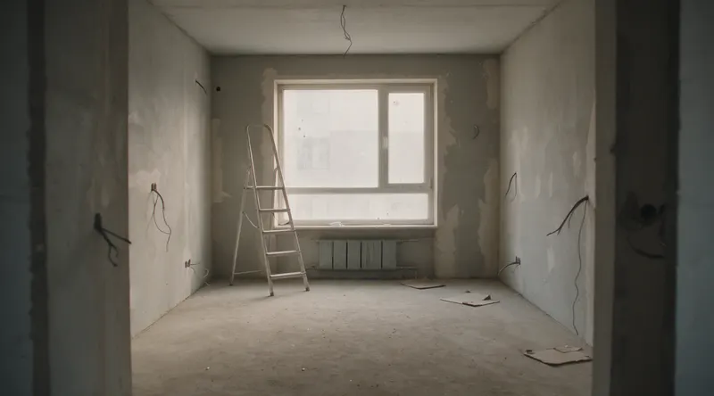
До 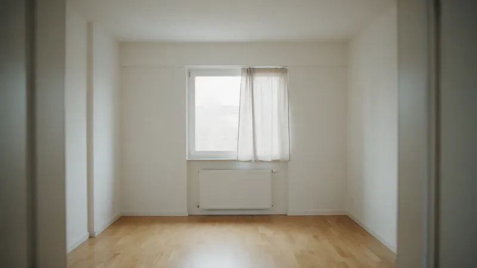
После
Сергей Волков
Прораб, 12 лет в ремонте. Ведёт объект от осмотра до сдачи, его телефон у вас с первого дня.
ООО «СтройГрафик» · ИНН 0000000000
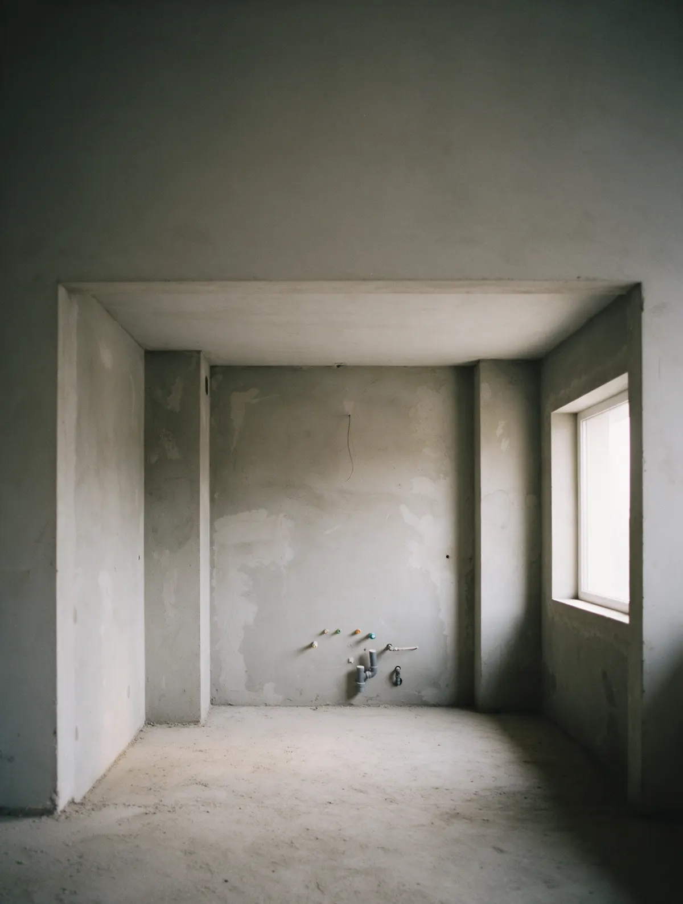
Было: кухня от застройщика
Стяжка, выводы воды и один провод под вытяжку. Отсюда и считаем.
Виды работ, цены и сроки
Ориентир за м² площади квартиры, работы без материалов. Точную сумму и график называем после осмотра и фиксируем в договоре. Делаем новостройки и вторичку без перепланировки в Казани. Не берём: ремонт офисов и коммерческих помещений.
Косметический
Обновить без демонтажа: стены, потолки, полы, покраска
от 3 недельот 4 500 ₽ / м²Чистовой
Финиш по готовой черновой: плитка, покраска, полы, двери
от 6 недельот 7 500 ₽ / м²Черновой
Новостройка с нуля до чистовой: стяжка, штукатурка, разводка
от 8 недельот 9 500 ₽ / м²Капитальный
Со сменой инженерии: электрика, сантехника, стяжка, выравнивание
от 12 недельот 14 000 ₽ / м²
Пример расчёта
Квартира 54 м², чистовой: стоимость работ 405 000 ₽, материалы отдельно, 9 недель.
Материалы обычно ещё 40–60% от стоимости работ. Точный список и суммы – в смете после осмотра.
Осмотр и смета бесплатно, готовим за 3 дней после осмотра. Гарантия на работы 2 года.
Рассчитать ремонтБыло: бетон, провода, пыль
Осталось здесь.
Стало: ваша квартира, сданная по графику
Пришлите план квартиры и пожелания. Вернёмся со сметой и графиком по неделям.
Рассчитать ремонт